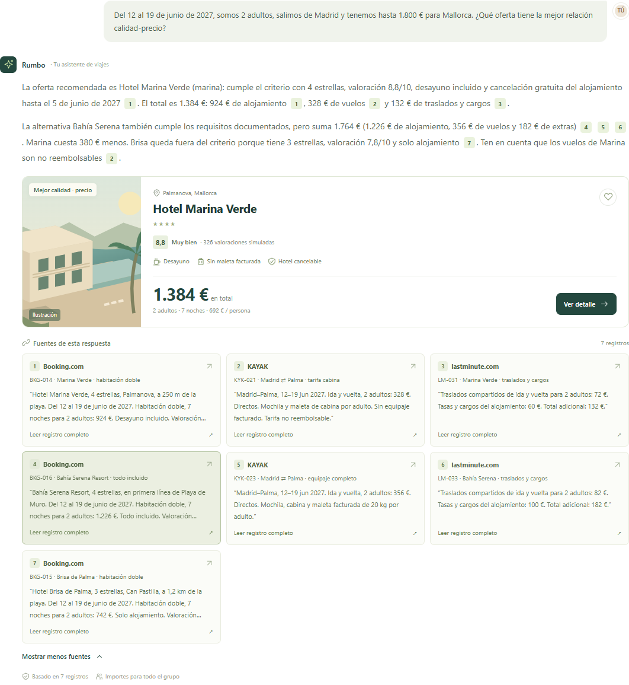
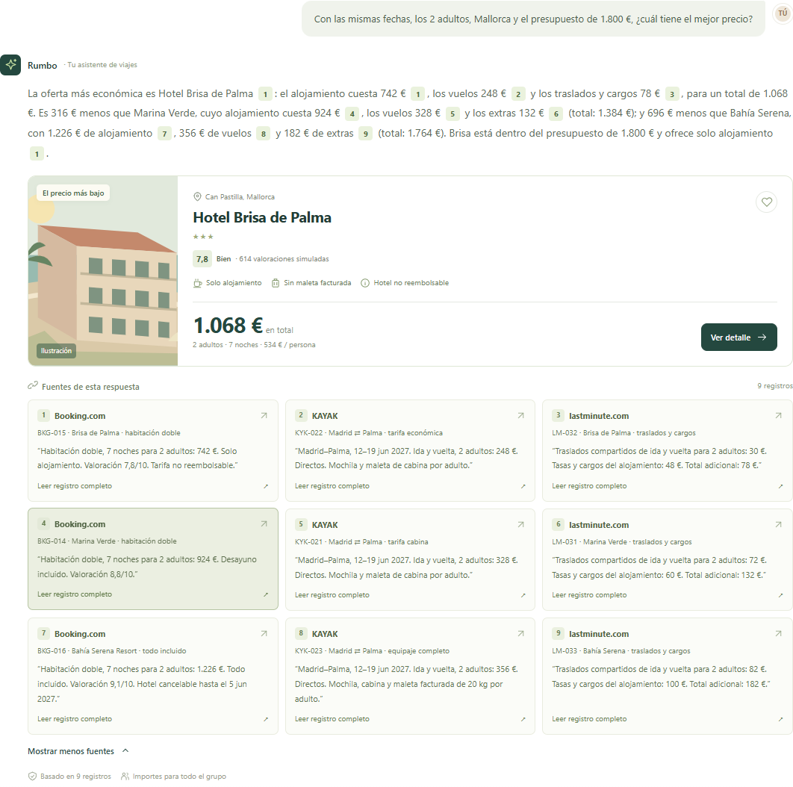
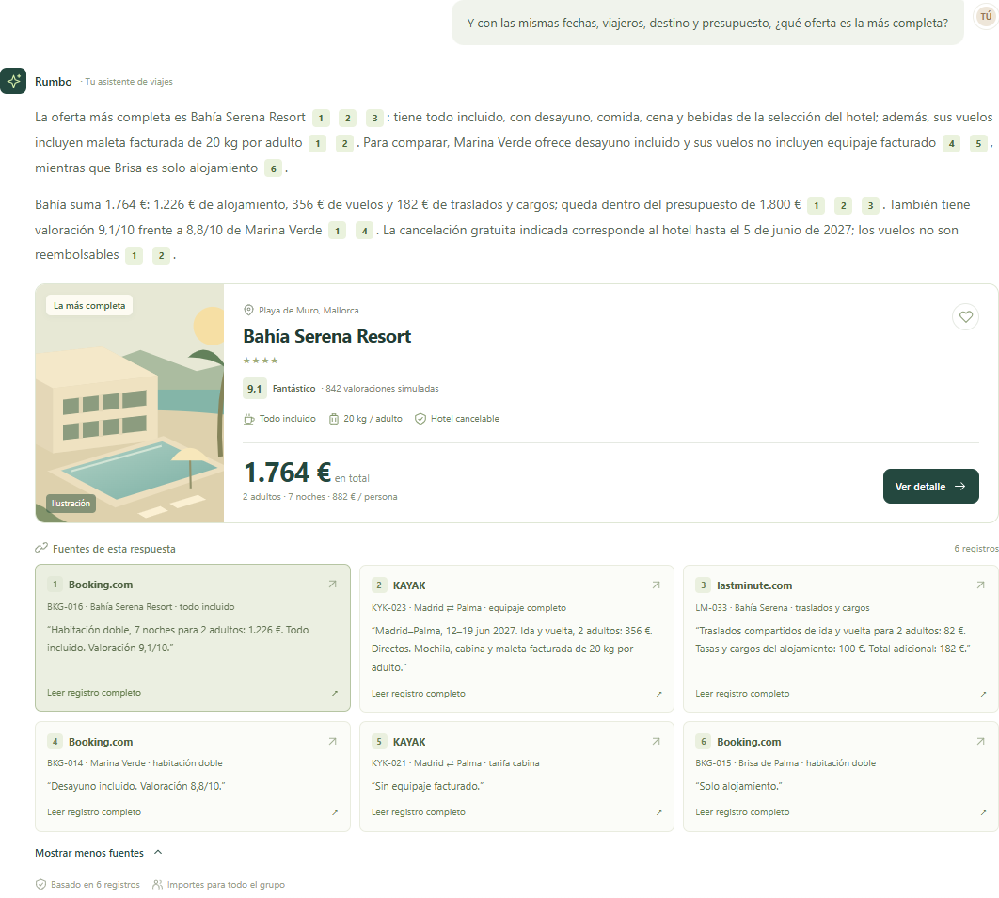
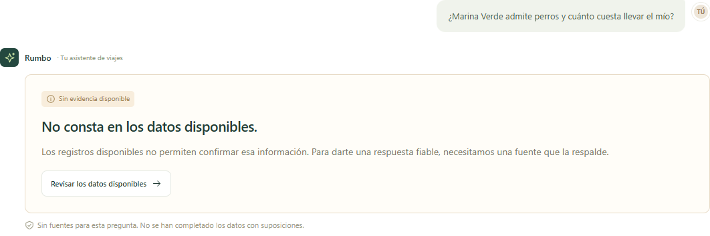
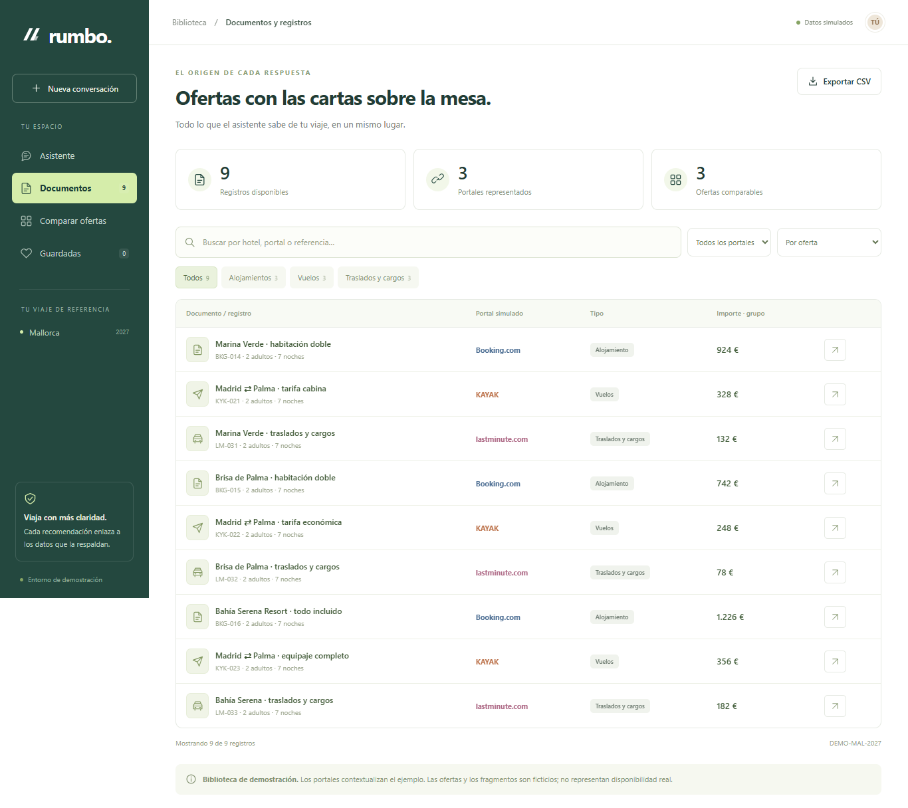
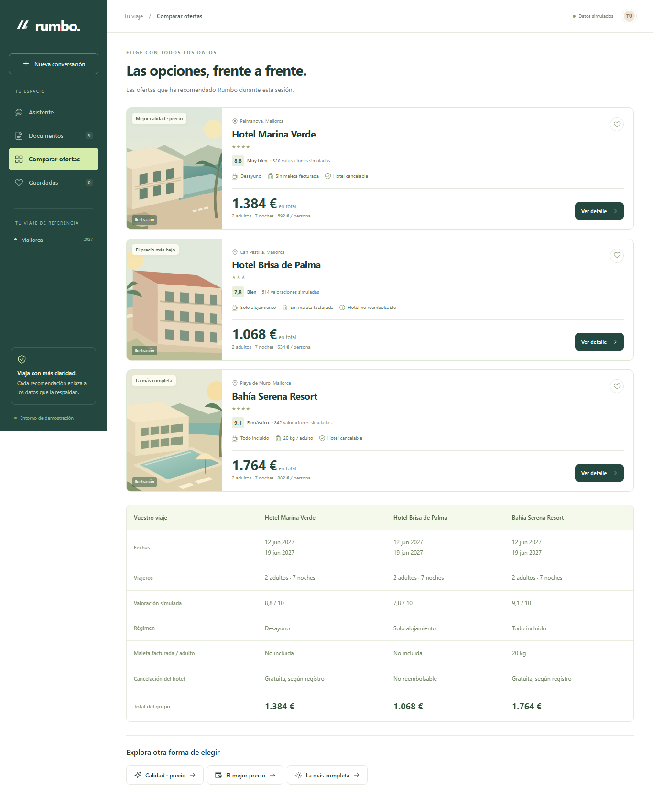
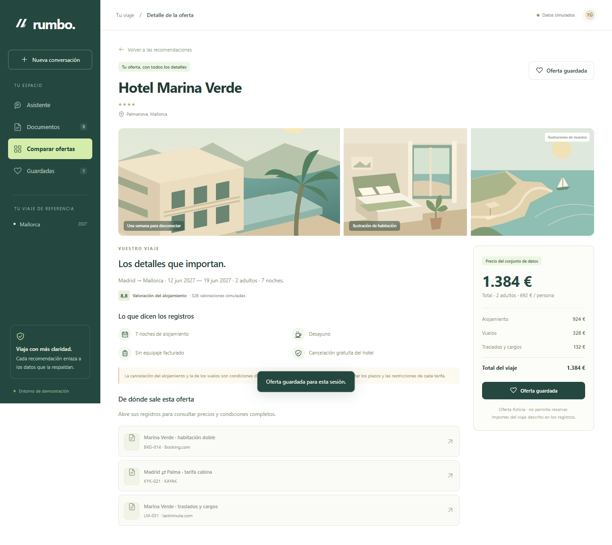
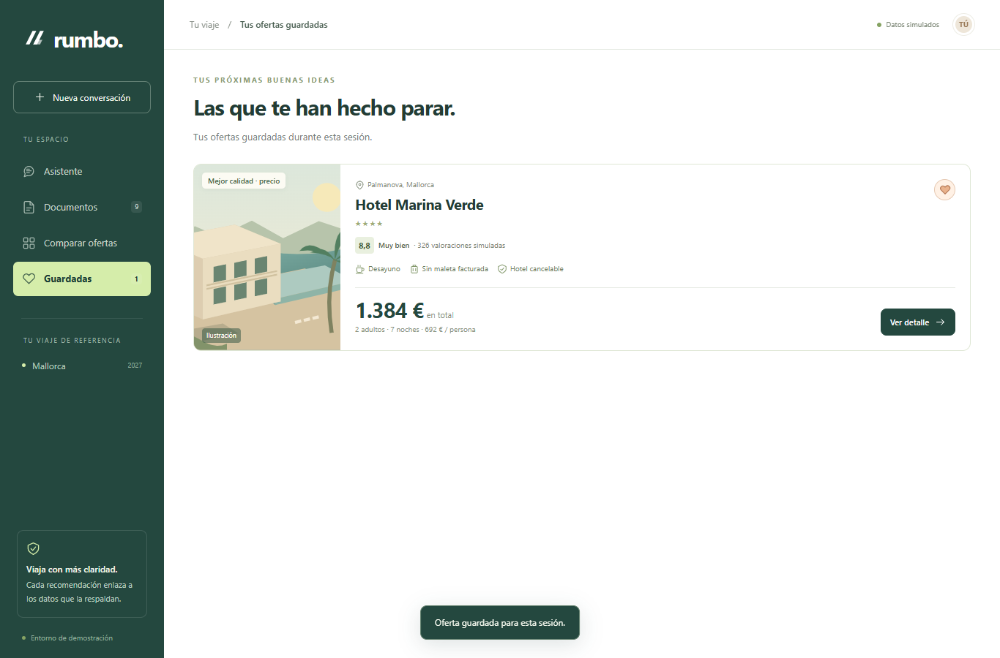

Elegir vacaciones con precios claros
y respuestas que se pueden comprobar.
Comparar ofertas de vacaciones entre varios portales exige revisar precios, servicios y condiciones por separado. Esta aplicación recomienda la mejor relación calidad-precio, el menor precio o la opción más completa para un mismo viaje, mostrando los registros que justifican cada respuesta.
Son datos inventados pero realistas, definidos en maquetas.html y preparados mediante preparar_datos.py. La biblioteca contiene nueve registros locales que representan Booking.com, KAYAK y lastminute.com; no se han obtenido mediante scraping ni representan ofertas reales de esos portales.
Capturas realizadas el 16 de octubre de 2026 a las 13:20 con Microsoft Edge 155.0.4283.45. Ventana de contenido de 1366 × 900 píxeles. Las imágenes del chat conservan el turno completo y sus fuentes; algunas son más altas que la ventana.
CAPTURA 1 / 8

CAPTURA 2 / 8

CAPTURA 3 / 8

CAPTURA 4 / 8

CAPTURA 5 / 8

CAPTURA 6 / 8

CAPTURA 7 / 8

CAPTURA 8 / 8

CÓMO LO COMPROBÉ · CONSULTA 1 / 4
Del 12 al 19 de junio de 2027, somos 2 adultos, salimos de Madrid y tenemos hasta 1.800 € para Mallorca. ¿Qué oferta tiene la mejor relación calidad-precio?
Sí: los tres componentes suman 1.384 €. BKG-014 documenta cuatro estrellas, valoración 8,8, desayuno y cancelación del hotel. La elección aplica una regla de la aplicación: la oferta más económica entre las que cumplen esas condiciones, con valoración mínima de 8,5; no es una clasificación oficial del portal.
En la página Documentos, busca cada referencia y pulsa «Leer registro», o usa los enlaces siguientes con el servidor arrancado. También están en datos/documentos.json, buscando el campo id.
Hotel Marina Verde, 4 estrellas, Palmanova, a 250 m de la playa. Del 12 al 19 de junio de 2027. Habitación doble, 7 noches para 2 adultos: 924 €. Desayuno incluido. Valoración 8,8/10. 326 valoraciones simuladas. Cancelación gratuita del alojamiento hasta el 5 de junio de 2027, 23:59 (hora de Madrid).
Abrir registro BKG-014 en el servidor localMadrid–Palma, 12–19 jun 2027. Ida y vuelta, 2 adultos: 328 €. Directos. Mochila y maleta de cabina por adulto. Sin equipaje facturado. Tarifa no reembolsable.
Abrir registro KYK-021 en el servidor localTraslados compartidos de ida y vuelta para 2 adultos: 72 €. Tasas y cargos del alojamiento: 60 €. Total adicional: 132 €.
Abrir registro LM-031 en el servidor localComprobación automática: 7 fragmentos citados coinciden literalmente con sus registros; los tres componentes de la oferta aparecen entre las fuentes. Todas las referencias citadas: BKG-014, KYK-021, LM-031, BKG-016, KYK-023, LM-033, BKG-015. Esta comprobación literal no sustituye la revisión humana del significado.
CÓMO LO COMPROBÉ · CONSULTA 2 / 4
Con las mismas fechas, los 2 adultos, Mallorca y el presupuesto de 1.800 €, ¿cuál tiene el mejor precio?
Sí: 742 € de hotel + 248 € de vuelos + 78 € de extras = 1.068 €. Al abrir los otros seis registros se comprueba que las alternativas suman 1.384 € y 1.764 €: Brisa es la más barata de estas tres opciones.
En la página Documentos, busca cada referencia y pulsa «Leer registro», o usa los enlaces siguientes con el servidor arrancado. También están en datos/documentos.json, buscando el campo id.
Habitación doble, 7 noches para 2 adultos: 742 €. Solo alojamiento. Valoración 7,8/10. Tarifa no reembolsable.
Abrir registro BKG-015 en el servidor localMadrid–Palma, 12–19 jun 2027. Ida y vuelta, 2 adultos: 248 €. Directos. Mochila y maleta de cabina por adulto.
Abrir registro KYK-022 en el servidor localTraslados compartidos de ida y vuelta para 2 adultos: 30 €. Tasas y cargos del alojamiento: 48 €. Total adicional: 78 €.
Abrir registro LM-032 en el servidor localComprobación automática: 9 fragmentos citados coinciden literalmente con sus registros; los tres componentes de la oferta aparecen entre las fuentes. Todas las referencias citadas: BKG-015, KYK-022, LM-032, BKG-014, KYK-021, LM-031, BKG-016, KYK-023, LM-033. Esta comprobación literal no sustituye la revisión humana del significado.
CÓMO LO COMPROBÉ · CONSULTA 3 / 4
Y con las mismas fechas, viajeros, destino y presupuesto, ¿qué oferta es la más completa?
Sí: 1.226 € de hotel + 356 € de vuelos + 182 € de extras = 1.764 €. BKG-016 recoge todo incluido y KYK-023 una maleta facturada de 20 kg por adulto. La regla de la aplicación prioriza régimen, equipaje, cancelación y valoración; el presupuesto deja 36 € de margen.
En la página Documentos, busca cada referencia y pulsa «Leer registro», o usa los enlaces siguientes con el servidor arrancado. También están en datos/documentos.json, buscando el campo id.
Habitación doble, 7 noches para 2 adultos: 1.226 €. Todo incluido. Valoración 9,1/10.
Abrir registro BKG-016 en el servidor localMadrid–Palma, 12–19 jun 2027. Ida y vuelta, 2 adultos: 356 €. Directos. Mochila, cabina y maleta facturada de 20 kg por adulto.
Abrir registro KYK-023 en el servidor localTraslados compartidos de ida y vuelta para 2 adultos: 82 €. Tasas y cargos del alojamiento: 100 €. Total adicional: 182 €.
Abrir registro LM-033 en el servidor localComprobación automática: 6 fragmentos citados coinciden literalmente con sus registros; los tres componentes de la oferta aparecen entre las fuentes. Todas las referencias citadas: BKG-016, KYK-023, LM-033, BKG-014, KYK-021, BKG-015. Esta comprobación literal no sustituye la revisión humana del significado.
CÓMO LO COMPROBÉ · CONSULTA 4 / 4
¿Marina Verde admite perros y cuánto cuesta llevar el mío?
La negativa es coherente con el conjunto local: BKG-014 no contiene política de mascotas ni suplementos, y ninguno de los nueve registros documenta ese dato. La ausencia de información no demuestra que el hotel prohíba mascotas. El servidor devuelve sin_datos y modelo_consultado=false; no adjunta fuentes inventadas.
En la página Documentos, busca cada referencia y pulsa «Leer registro», o usa los enlaces siguientes con el servidor arrancado. También están en datos/documentos.json, buscando el campo id.
Hotel Marina Verde, 4 estrellas, Palmanova, a 250 m de la playa. Del 12 al 19 de junio de 2027. Habitación doble, 7 noches para 2 adultos: 924 €. Desayuno incluido. Valoración 8,8/10. 326 valoraciones simuladas. Cancelación gratuita del alojamiento hasta el 5 de junio de 2027, 23:59 (hora de Madrid). Tasas y cargos contabilizados en LM-031.
Abrir registro BKG-014 en el servidor localRevisa además los otros ocho registros para confirmar que tampoco aportan políticas de mascotas. No se hizo una llamada al modelo para completar el dato.
CÓMO ESTÁ HECHO
servidor.py arranca FastAPI en el puerto 8000 con uv run servidor.py. src/proyecto_final/rag.py carga los documentos y las ofertas locales, prepara embeddings y guarda el índice en rag/indice.npz, que reutiliza si no cambian los datos o el modelo.
El RAG valida primero el tema y las condiciones del viaje, recupera fragmentos por similitud y aplica reglas para elegir la oferta. Solo cuando hay evidencia suficiente pide al modelo una salida estructurada. Comprueba que cada cita sea literal, que proceda de un registro permitido y que estén los tres componentes del total. Las preguntas no documentadas y los resultados sin similitud suficiente devuelven «No consta».
gpt-6-lunatext-embedding-3-smallNombres leídos de la configuración efectiva de Python al generar este entregable. Las tres recomendaciones capturadas proceden de consultas reales al servidor, sin respuestas interceptadas.
Vite sirve la interfaz en el puerto 5173 y reenvía /api a Python. El navegador usa POST /api/preguntar, GET /api/documentos y GET /api/documentos/{id}. La clave permanece en el servidor y no se incluye en la aplicación web.
Terminal 1, desde la raíz:
uv run servidor.py
Terminal 2, desde la raíz:
cd web
npm.cmd run dev
Terminal 3, desde la raíz:
node web/capturas.mjs
uv run python -c "from proyecto_final.rag import TravelRAG; import json; from pathlib import Path; r=TravelRAG(); Path('capturas/modelos.json').write_text(json.dumps(dict(respuesta=r.response_model, embeddings=r.embedding_model)), encoding='utf-8')"
node web/generar-entregable.mjsLas capturas usan playwright-core y el Edge instalado (channel: "msedge"), sin descargar navegadores. capturas/comprobacion.json conserva las preguntas, respuestas, fuentes y resultados de verificación. El documento se imprime en A4 con page.pdf; cada captura ocupa una página propia.